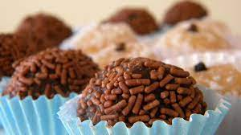
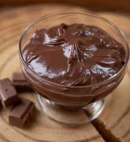
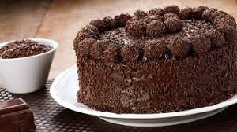

- home
- receitas
- tipos
A culinária é a arte de cozinhar ou confeccionar alimentos e foi evoluindo de acordo com a história da humanidade e possui características diferentes em cada cultura.
O brigadeiro é um doce 100% brasileiro, que acompanha as gerações, desde a infância até a vida adulta. O típico docinho tem a presença garantida nas casas brasileiras, onde os ingredientes necessários para fazê-lo não faltam na dispensa. Ele se espalhou pelo mundo, chegou à Angola e é um dos doces mais pedidos na Les Demoiselles.
  